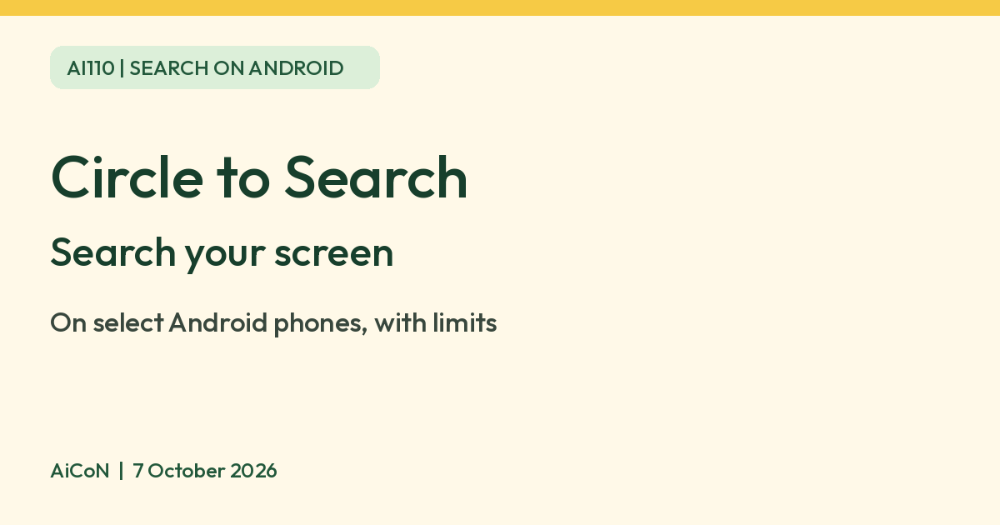

Circle to Search: search your screen without switching apps
Circle to Search lets you circle, highlight or tap text and images on your Android screen to search them or translate them. It works only on select phones, and some newer features need newer Pixel models.

What it is
Circle to Search is a Google feature on select Android phones. You can circle, highlight, scribble on or tap text, an image or a video on your screen and get Google results without leaving the app you are in. Google's Android Help says it is available on select models, not every Android phone.
How to start it
- On 3-button navigation, long press the Home button. On gesture navigation, long press the navigation handle.
- Circle, highlight or tap the text, image or video you want to search.
- Add text in the search bar if you want to refine the search.
- Swipe up on the results at the bottom for more.
You can also tap the musical note to search a song playing around you or from your phone, and tap the search bar to search the whole screen.
Translate what is on screen
Open Circle to Search and tap Translate to translate your whole screen, then choose the languages in the pill at the bottom. Google's Pixel help also describes translating as you scroll. Google's Android help says Scroll and translate is being released gradually to selected devices only. Translation works on most content, but not on videos and GIFs.
Where AI comes in
| AI Overviews | Google's Android Help says that outside the United States you need to opt in to "AI Overviews and more" in Search Labs to get AI Overviews with Circle to Search. That page may change, so check Search Labs on your phone. |
|---|---|
| Find the look and Try it on | Google's Pixel help lists these for Pixel 10 and newer models and for devices that support AI Mode. Try it on is listed for India and a few other countries, for logged-in users aged 18 or older with Web and App Activity and Search Personalization turned on. Some items are not eligible. |
| Photo transparency check | Google's Pixel help says you can check whether a photo is original or modified. It may not work in banking, medical or other confidential apps. |
| Camera app | Circle to Search inside the Camera app is listed for Pixel 11 models only. |
If it does not work
- Go to Settings, search for Digital assistant app, and make sure the default is Google and Use screenshot is on.
- Update the Google app in the Play Store. Google says the Google Go app does not support it.
- You can turn it off in Settings, under Circle to Search.
Limits to know
- It needs a supported Android phone. Pixel 6 and later are listed by Google for the basic feature; other brands vary, so check your phone's settings.
- Newer AI features are limited to newer Pixel models or devices that support AI Mode.
- Google's pages do not give a price, and we do not quote one. It is a phone feature, not a separate app we could price.
Frequently asked questions
Does every Android phone have it?
No. Google says select models.
Is it free?
Google's help pages do not state a price. We did not verify any charge.
Does it work on iPhone?
Google's help pages describe Android phones only. We found no iPhone support on them.
Sources: Android Help: Search your screen with Circle to Search, Pixel Phone Help: Circle to Search on your Pixel. Checked 7 October 2026.